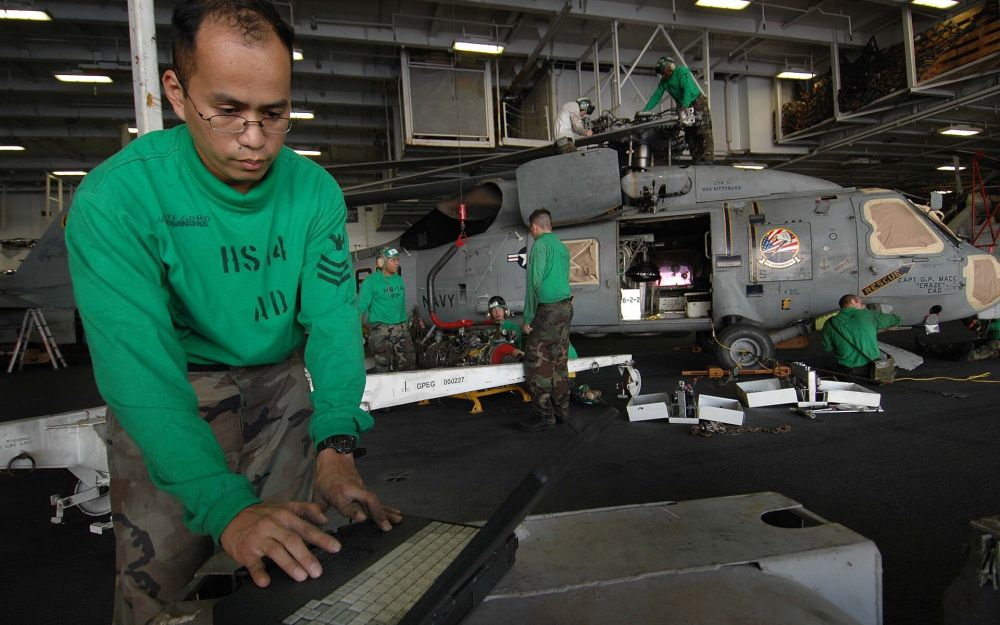
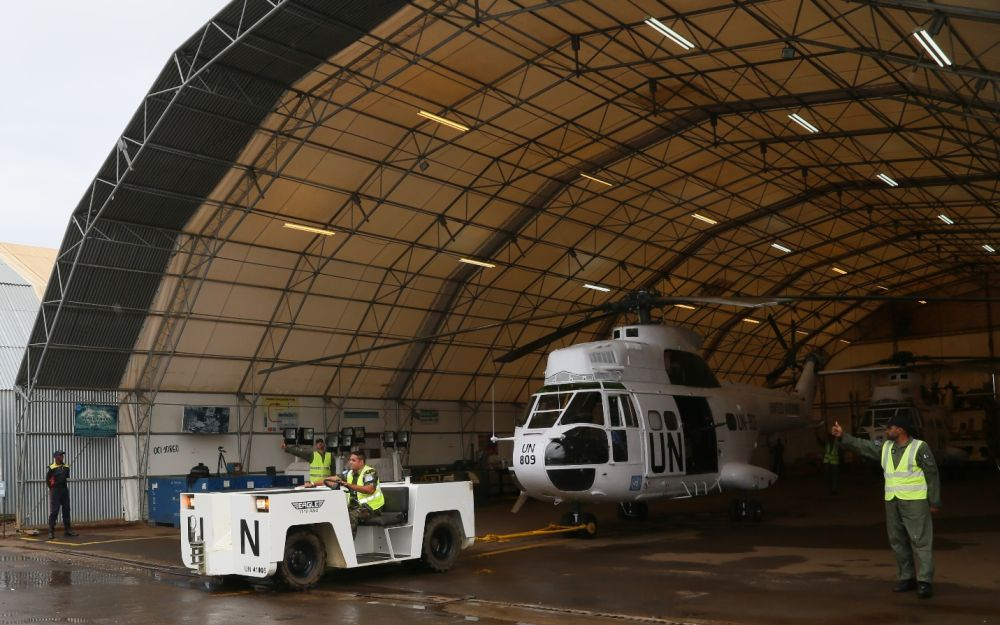
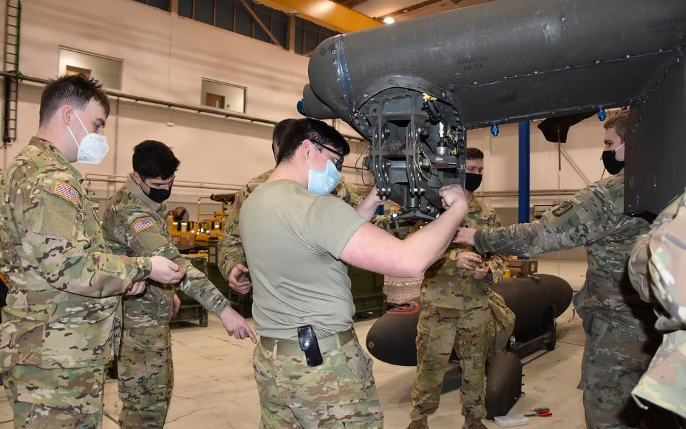
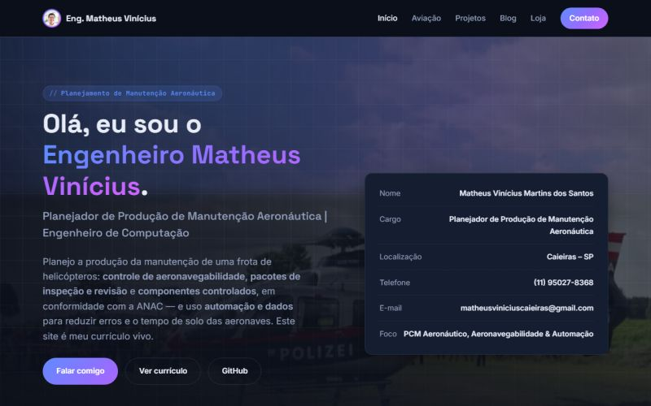
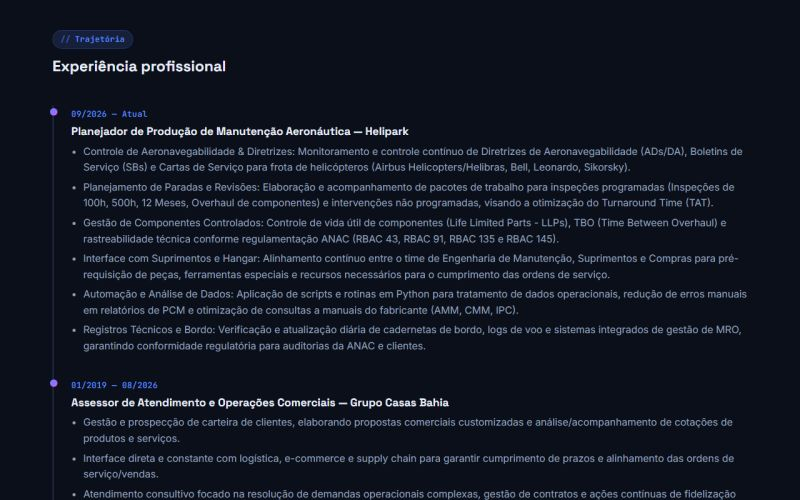

Python no PCM aeronáutico: menos planilha, menos erro manual
Rotinas simples em Python para consolidar horas voadas, projetar vencimentos de componentes (LLP/TBO) e gerar relatórios de planejamento sem retrabalho.
Vídeo: Airbus H125 — Fiver, der Hellseher, CC BY-SA 4.0
Escrevo sobre planejamento e controle de manutenção de helicópteros, automação com dados e os projetos de software que desenvolvo.

Rotinas simples em Python para consolidar horas voadas, projetar vencimentos de componentes (LLP/TBO) e gerar relatórios de planejamento sem retrabalho.

Como montar pacotes de trabalho, antecipar peças e ferramentas especiais e alinhar hangar e suprimentos para devolver a aeronave à operação no prazo.

A diferença entre Diretriz de Aeronavegabilidade, Boletim de Serviço e Carta de Serviço — e como manter o controle de cumprimento em dia para auditorias da ANAC.

Como estruturei institucional, blog e loja compartilhando um mesmo design system e configuração, sem framework.
Tabelas, relacionamentos e índices para uma loja com seção de promoções/clearance.

Por que transformei meu currículo em um site — e o que isso mudou nas oportunidades que recebi.
Modelos da mesma família dos que acompanho no planejamento de manutenção. Vídeos ilustrativos do Wikimedia Commons.
Uma seleção de vídeos do canal mostrando alguns dos projetos na prática.